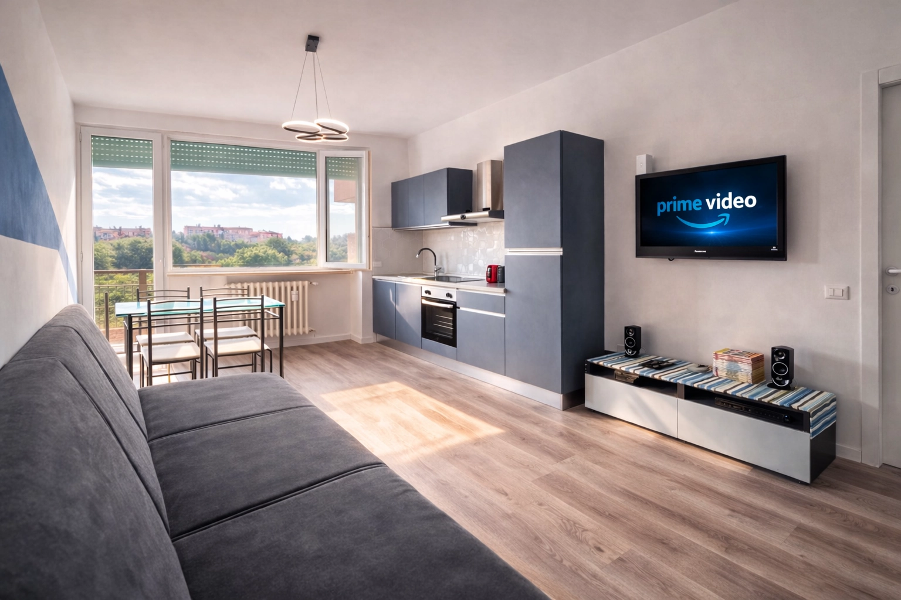

Appartamento indipendente con cucina attrezzata, terrazzo privato e self check-in. Ideale per soggiorni brevi e lunghi a Milano — smart working, trasferte di lavoro, coppie in visita.
Uno spazio tutto tuo, pensato per chi vuole muoversi in autonomia e sentirsi a casa fin dal primo minuto.
Arrivi quando vuoi, senza vincoli di orario e senza dover coordinare consegne chiavi.
Cucina completa per gestire i pasti in autonomia, comoda per soggiorni di più giorni.
Uno spazio esterno tutto tuo, raro da trovare in un appartamento in città.
Collegamento diretto al Duomo senza cambi, e accesso rapido a tutta Milano.
Nessuno spazio condiviso: l'appartamento è interamente a tua disposizione.
Connessione affidabile e Smart TV in camera e in salotto, perfette anche per lavorare da remoto.
Bagno completo con vasca e rivestimento decorato, luminoso grazie alla finestra.
Camera matrimoniale con letto 160x190 e salotto con divano letto 120x190: puoi ospitare comodamente fino a 3 persone. Perfetto sia per una coppia in visita a Milano, sia per chi è qui per lavoro e ha bisogno di uno spazio tranquillo per un soggiorno più lungo.
Vedi tutti gli spazi
A 2 minuti a piedi dalla fermata Metro M3 Comasina, con collegamento diretto al Duomo senza cambi. Vicina anche alla stazione di Milano Affori (linea suburbana) e allo svincolo autostradale A4 di Cormano — comoda sia per chi arriva in auto sia per chi si muove solo con i mezzi.
Scopri la zonaScrivici o chiamaci: ti rispondiamo rapidamente per confermare disponibilità e dettagli del soggiorno.
Vai ai contatti